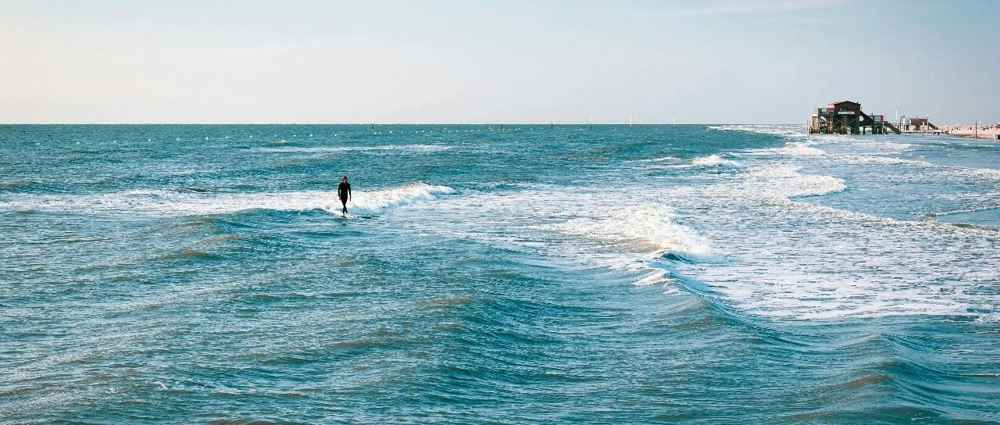

何日君再来~
港股走势很不错。
腾讯我设置了550港元再出一万股，应该有机会触发，余下的4万股就放着先不卖了。
22年10月，腾讯跌破200时，我抄底，有些人说我会抄在山腰上，表示坚决不买。现在腾讯500+了，这些人又跑来问能不能买？
股市里最好的韭菜，说的就是这帮人。
沪铜开盘涨到79280元，我在79100-79200的三个设置被触发，成功减仓15%，叠加此前减仓的5%，合计已减仓20%，余下的80%，如果沪铜能上8万，会陆续清仓。
沪铜此前6.9万的成本，在最高点8.8万+没有及时减仓，账面浮盈少了45%，后续会谨慎些，及时把握机会。
离岸人民币汇率最近拉回7.25，跟两个因素有关:
一个是发行1200亿票据后离岸人民币被抽水，流动性减弱，更容易维稳了，但成本挺高的，只能短期玩，持久不了；
另一个是美元指数走弱。川普一直想走弱美元路线，关税、逼美联储降息等，都是希望美元走弱，这样才有希望实现最终目的:制造业回流。
正常来说，美股和美元资产走强，会吸引美元涌入老美，和弱美元形成悖论。所以川普上任后的这段时间，美股走猴市路线，上蹿下跳、震荡下跌，其实都在预期内。
这也是我之前说的，美股今年有大概率下调20%，其实就是“川普时刻”结合美股估值偏高、宏观微观等因素，而做出的综合判断。
目前美股的纳指才下跌10%，标普6%+，希望还能再往下跌一跌，跌出黄金坑位，我大量的资金储备就可以派得上用场了。
英伟达下跌5.74%，收盘价110.57美元。我两个新账户做了两次T，目前成本113.79美元。个人和家庭两个老账户中，英伟达依旧负成本，100.39节点的加仓没变。
博通下跌6.33%，收盘价179.45美元。我个人账户除了做次T外，还在179加仓了一次，目前成本183.5美元。博通近期大概率会重返200美元以上，因为业绩不差，受益于巨头拉动。
亚马逊下跌3.68%，收盘价200.7美元。新账户同样做了次T，目前成本202.5美元。个人和家庭两个老账户没动，负成本了，除非有180以下的亚马逊，不然不会动。
台积电下跌4.57%，收盘价175.85美元。新账户操作了一次台积电做T，目前成本174.25美元。170左右的台积电，开始进入便宜、划算的区间。
同样便宜的，还有谷歌，微跌0.45%，收盘价174.2美元。谷歌这几天不怎么跌了，设置的155加仓，估计只能等大盘大跌20%才有机会。
特斯拉跌了5.61%，收盘价263.45美元。特斯拉未来一段时间，预计会在260-310之间震荡。我觉得还是贵，211美元以内的特斯拉，两个新账户才有兴趣较大量加仓，200以内，个人和家庭账户才考虑加仓。
微软下跌1%，收盘价396.89美元。我两新账户做了次T，401.5卖出一部分后，目前成本392.15美元。
Meta下跌4.35%，收盘价627.93美元。之前要不是在720-735减仓一部分，现在压力就大了，减仓后成本低了，现在没啥压力，200多美元的成本，遇到585美元以内的，还会果断加仓。
生物医药板块，联合健康涨了2.47%，收盘价487.7美元；默沙东和强生微涨0.87-0.43%，收盘价94和165.8美元；诺和诺德跌3.1%，收盘价88美元，最近诺和诺德典型猴市；
礼来跌1.82%，收盘价912.76美元，我之前设置的930减仓，前两天被触发了，成功卖出，另一个960减仓的设置没变。
消费板块，Costco和沃尔玛分别下跌2%、1.4%，收盘价1026.6没有、94.6美元；宝洁和麦当劳微涨，麦当劳320减仓节点没变。
… …
早上朋友来访，所以更新推迟。
他22年开始一起买美股，近600万美元进场，今天打开账户给我瞧一瞧，翻了3.3倍+。
我们一起感慨2022年大盘下跌35-38%那段难熬的日子，也一起回顾23-24年几倍收益的大好行情，并憧憬这一两年大盘能再来一波大的调整，再次被造富。
嗯，很多人都憧憬，只是，何日君再来？希望今年能来。
他有个困惑，要不要继续持有英伟达，在这股上他已经吃到了最大头的红利；我们还讨论了人工智能的一些看法。
最后达成共识的是，遵循客观规律，人工智能也一样，前期芯片公司赚钱，后期应用端赚钱。
但现在，人工智能还在前期，这个过程最少还有两年时间。后续的应用端，会有超大型模型、各行业细分大模型等不同的具体应用。
超大型模型的成本高，会用在高精尖的推理和应用上，主要面对特殊高精尖群体；各行业细分大模型会走低成本，面向具体社会大众。
未来的AI时代，人会分三类:
第一类是充分利用资本和算法等技术，驱动AI为己所用；第二类是充分发挥自身的人文情怀和人文精神（AI所不具备的），走出独立于AI之外的路；第三类是广大的大众，和AI竞争就业岗位。
你们可能会觉得体力活AI也没法干，别忘了，AI可以驱动机器去干。就看要不要保住这一块的蛋糕给普罗大众了。
整体来说，人工智能的发展速度说快也很快，说慢也很慢，主要看两点，一个是统治的需求，一个是科技发展的水平。
昨天和一朋友在喝茶，我说我现在在培养孩子的过程中，除了在理论层面之外，特别注重细节的落地动作。
平时会带他们去菜市场、工厂、田地里……
菜市场里的菜，从哪里来？挑担子的和摆摊的，菜价为什么不一样，区别在哪里？菜新鲜与否怎么判断？
水饺的皮和馅、蛋肠是怎么生产的，每一个步骤和细节添加了什么东西，最后怎么做成成品的？
稻米是怎么从土地平整、耕地、插秧、除虫除草、收割、晒谷，到加工成稻米，煮熟成米饭的？
很多细节的东西，孩子们一直在城市里，压根没接触过，印象中没有具体每个步骤的细节，只有书本上学到的理论。
理论不能落地到细节，就终究只是理论，没法真正消化吸收成为自己的知识。
我去年下半年把花园做了一下改造，切了一块儿出来菜地，种上玉米、地瓜、马铃薯、小西红柿、小白菜、花菜等，每一步具体细节都会带他们一起参与:
翻地、平整、撒种、扦插、除草、撒草木灰/喷辣椒水等，把过程尽可能给他们呈现。
就像当初带着他们去夜市摆摊，搞清楚钱究竟怎么赚怎么亏，在公司看商业合同怎么谈、怎么签一样。
这几年，他们最大的进步，其实是补齐了实践和细节的短板，和所学的理论知识做了结合，因此有了巨大的飞跃，知行合一。
我想，这或许是未来AI我们所能做的、较难被替代的。
就这样吧。
免责声明：本人提供的信息仅供参考，不构成投资建议。本人的交易不代表任何立场；投资者应根据自身财务状况、投资目标等情况自主做出投资决策并承担投资风险。投资有风险，入市需谨慎。